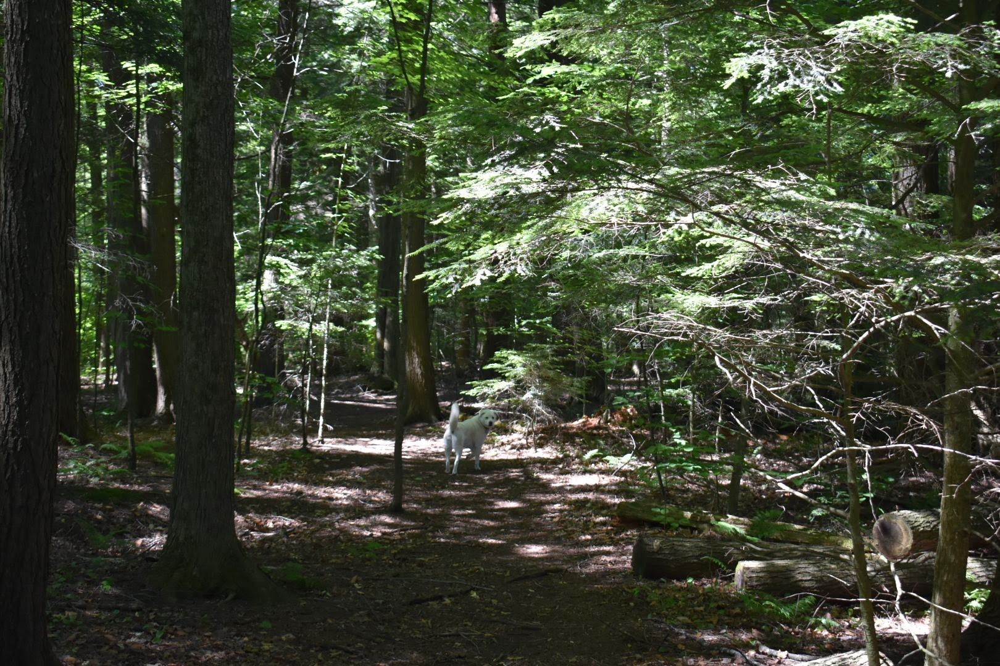
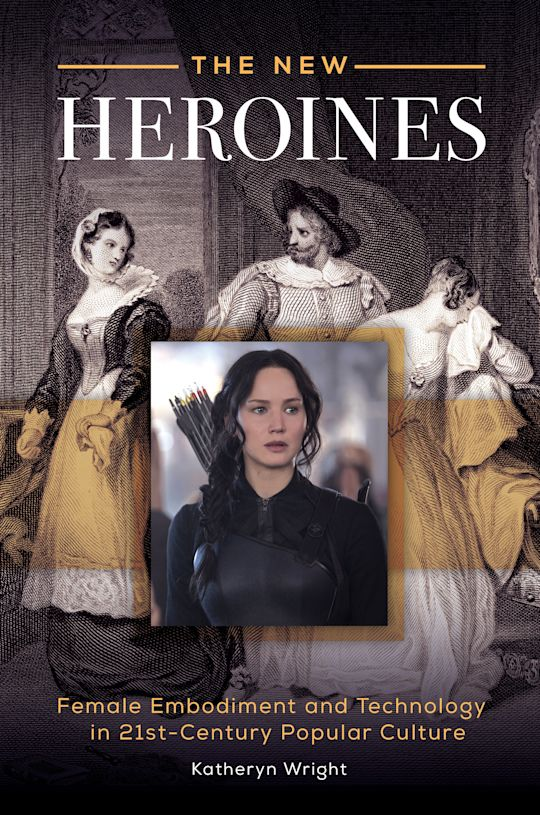

Writing
Scholarship across digital humanities, posthumanist pedagogy, media studies, and popular culture. Full publication list available in the CV.

Speculative Education: Making Knowledge from the Ruins
Develops a theory of knowledge-making under conditions of uncertainty, introducing rendering as the practice of making new knowledge alongside live problems, structural integrity, and relational debt as critical posthumanist pedagogical frameworks for reimagining teaching and learning.

The New Heroines: Female Embodiment and Technology in 21st Century Popular Culture
Examines teen and young adult female heroines across popular culture genres and media, tracing a new feminist ideal emerging at the intersection of embodiment, technology, and posthuman subjectivity.
"Unbecoming the Maker: Rendering and Posthuman Pedagogies in Digital Humanities"
Maker-based pedagogies expand the scope of learning but leave the humanist subject intact. This article introduces rendering as a posthumanist alternative, relocating the politics of making from who makes to what the making does. Drawing on a printmaking course that takes students into the streets of Burlington, it argues that curriculum design functions best as a provisional structure, like a trellis rather than a mold, that creates conditions for live problems to surface rather than predetermined outcomes to be met.
"A Modular Curriculum for Uncertain Times"
Curriculum design is a structure for making knowledge, not just delivering it. This article argues for a modular approach organized around skills and knowledge domains rather than disciplines, drawing on institutional redesign as a case study for building flexible, future-oriented liberal education.
"Making an Alternate Reality Game"
ARGs mix digital platforms with physical objects and locations to build worlds players inhabit in real time. This chapter offers a practical and theoretical guide to ARG design as a digital humanities pedagogy, drawn from years of teaching students to make place-based interactive narratives that blur the line between fiction and lived experience.
"Teaching Fake Meat as New Media"
Food as a medium for interdisciplinary inquiry. This article outlines how posthuman theory, cultural studies, and experiential learning combine in a course examining alternative protein and food culture, using cooking and place-based activities as sites of collective knowledge-making.
"Re-Making General Education: Envisioning Gen Ed as a Digital Humanities Makerspace"
What would it look like to redesign general education through the lens of the digital humanities? This article argues for a makerspace model of gen ed, proposing a framework where interdisciplinary inquiry and digital methods replace disciplinary silos.
Describes the development and teaching of a signature assignment across all sections of the general education course "Bodies." The project invites students to examine bodies as an interdisciplinary site of inquiry through embodied, experiential learning.
Two competing visions of campus safety — rhetorical and bodily — collide in this essay, arguing that the ability to access the unsafe spaces of critical inquiry is contingent on the physical safety of the bodies in the room. Who gets to be unsafe, and for whom, is a political question.
"The Problems and Possibilities of Integrating Professionalism and Education"
A case study of the senior capstone experience at Champlain College, examining how integrative learning and professional preparation can coexist without collapsing one into the other.
"Be Kind, Please Rewind: Video Stores, Algorithmic Recommendation Systems, and the Ethical Commitments of Media Curation"
The video store was a community before algorithms made curation invisible. This chapter traces the shift from the ethics of the video store grounded in the cultural practices of browsing, asking, belonging, to the ethics of the algorithm. What is lost when AI recommendation systems replace the relational practice of human curation? Drawing on personal experience and films like Clerks, Scream, and Be Kind Rewind, it asks what kind of audiences we became when the shelves disappeared.
"Wayfinding through Media: The Pop Flâneuse in Gilmore Girls"
This chapter develops the concept of the pop flâneuse, a feminist figure who moves purposefully through transmedia worlds, seeking embodied connection with the stories that have shaped her life. Drawing on a visit to the Stars Hollow set during the 2016 revival, it traces four practices: affective engagement, wayfinding across platforms, navigating stasis through active waiting, and recognition through reflection.
"Trauma, Technology and the Affective Body in Firefly and Dollhouse"
River and Echo, the main characters in Firefly and Dollhouse, are made to feel everything. They are affective bodies, completely open and exposed. That is both their trauma and their power. This chapter uses Spinoza's theory of affect to examine how the Alliance and Rossum Corporation transform bodies through technology, and how the chosen family becomes the site of recovery from that transformation.
"Pop Culture Pilgrimage and the Politics of Place"
An autoethnography of a visit to Kunta Kinteh Island in The Gambia. This chapter considers the site through dark tourism and pop culture pilgrimage, examining how place, memory, and media representation layer into each other at sites of historical trauma.
"Gilmore Girls: 'Bon Voyage'"
A close reading of the Gilmore Girls series finale, examining how the episode resolves the series' central tensions around class, mother-daughter relationships, and the meaning of home.
"How I Met Your Mother: 'Last Forever'"
Examines the controversial finale through the lens of narrative closure, arguing that the episode's reception reveals how invested audiences become in the relational logic of long-form television.
"Haptic Perception Meets Interface Aesthetics"
The iPhone changed how bodies relate to screens. This article examines cultural representations of touchscreen technology in its aftermath, arguing that haptic interfaces reshape not just interaction but perception itself.
"Revolutionary Art in the Age of Reality TV"
The Hunger Games uses live television as a technology for managing collective feeling and controlling populations. This chapter applies affect theory to the Hunger Games trilogy, examining the struggle between aestheticizing politics and politicizing art through the televisual apparatus, and what Katniss's celebrity makes possible within that struggle.
"Reaching for the Screen in Nine Inch Nails' Lights in the Sky"
During NIN's 2008 tour, Trent Reznor used semi-transparent stealth screens as physical objects to play hide-and-seek with his audience. This article reads that performance as a map of emerging bodily habituations forming through everyday screen interactions.
"Violent Entertainment, Popular Culture, and Technological Change"
Traces the relationship between violent spectacle and media technology from the Roman arena to YouTube, examining how each era's technology shapes the cultural meaning of violence as entertainment.
"Nine Inch Nails' Year Zero and the Biopolitics of Media Convergence"
Year Zero is a concept album and an alternate reality game at the same time. This chapter reads that convergence through a biopolitical framework, asking what it means when popular music builds a world players can inhabit and resist from inside.
"Total Immersion and the Total Screen"
Video games layer screens within screens to build simulated realities players navigate with their bodies. This chapter critically analyzes Dead Space and Mass Effect 2 through Baudrillard's theory of simulation, arguing that the screen never fully disappears into hyperreality. Its materiality keeps the encounter real, and resistant.
"Urban Screen as Virtual Counterpoint"
Three public artworks using urban projection raise questions about the linked materialities of participants, spectators, and urban space. This article uses Deleuze's concept of the virtual to consider what the urban screen makes possible as a site of encounter.